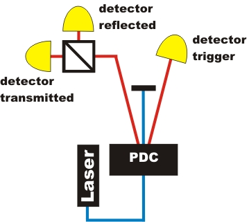
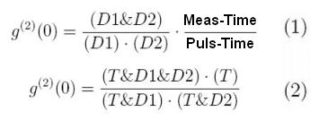
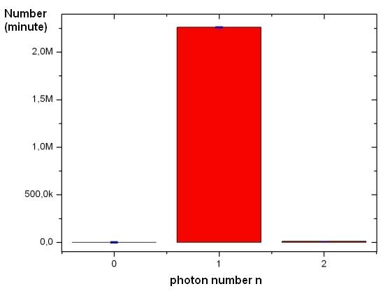
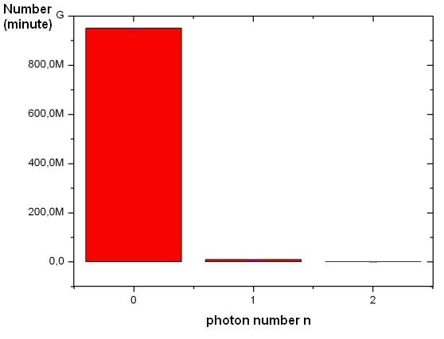

Photon as a quantum object
The existence of indivisible photons is to be shown experimentally. The light source emits pairs of photons (see basic principles). One of the photons is absorbed in the trigger detector and the other photon of the pair is now known to be present. This photon is incident on an optical beam splitter, as shown in figure 1. The analysis of observation can be done in different ways:
Approach 1: |
Single events | |
Approach 2: |
Count rates continous | |
Approach 3: |
Second order correlation (advanced) | |
Approach 4: |
Photon statistics |

Figure 1: Single photons, heralded by trigger detector, are incident on beam splitter
Approach 1: Single events
A bright light beam incident on a beam splitter would be divided into two separate, continuous beams with half intensity (or a different, but fixed division ratio according to the reflectivity of the splitting surface). In our quantum experiment, you can send single photons to the beam splitter and check for the detectors. The multimedia experiment requires the Flash-Player (Version 9 - Freeware) [Download]. Please repeat the experiment several times.
Explanation:
For each incident photon, exactly one detector D1 or D2 absorbs light. Simultaneous detection is nearly never observed, though on average both detectors absorb the same number of photons, i.e. the detection probability is 50% for each detector and the actual detection path for each photon is random. Extremly seldom, there is a coincidence. There are two single photons (n=2), which are generated in the crystal.
Light consists of indivisible portions, named light quanta, or more specifically, photons [Lew26]. At this point, nothing is said about the spatial properties, i.e. there is no reason to call photons “particles”. Note: A particle independent view on quantum objects is also possible for massive objects such as electrons as in the electronium model [Bro05].
Approach 2: Count rates continuous
Instead of single events, we now look at count rates, i.e. events per second (or any other time interval). What can you say about light quanta incident on the beam splitter?
Explanation:
The detection rates for both detectors D1 and D2, in coincidence with trigger detector T, are almost equal. This would have been expected for classical light as well. However, there are very few coincidences of D1 and D2, i.e. there is strong evidence that light is falling exclusively on one detector at a time. The light quantum cannot be divided. The few triple coincidences are not caused by errors, but by two photon pairs entering the apparatus simultaneously within the detection interval.
Approach 3: Second order correlation (advanced)
The concept of looking for coincidences can be extended quantitatively by introducing the intensity correlation function g²(0) as given in eq. (1) for two detectors behind a beam splitter, and eq. (2) for two detectors behind a beam splitter plus a trigger detector.
Let us assume a detector which has a certain trigger probability when a continuous light flux is incident, i.e. a binary detector excited by a monochromatic electromagnetic wave. For random triggering, the events represent a Poisson statistic in time. The intensity correlation function is g²(0)=1. Laser light is an example. Therefore, laser light is as classical as light can be! For thermal light, g²(0)=2, which could be understood with classical physics in principle, the detector events are less uniform than for Poisson distribution, or bunched.
When g²(0)<1, there is no classical interpretation, but light reveals its quantum nature. Detector events are more uniform than for Poisson statistics. There is more order than one would expect from a classical electromagnetic wave of constant amplitude. The photons are anti-bunched. Whereas it is difficult to observe anti-bunching on a uniform time scale, it is straight forward to see anti-bunching on a scale divided by events defined by the trigger detector. Typically, g²(0) is of the order 0.001 to 0.01. Nonclassical light has been produced since 1972 [Cla72], [Kim77], [Gra86] and is still the subject of intense research [Ure05]. Our best measurement of g²(0) corresponds to a violation of classical behaviour by 2470 standard deviations of the measurement. This accuracy is well compatible with results from research laboratories. Switching off the trigger detector removes the order introduced by the photon pairs. In this case we observe g²(0) =1 as expected.In the following interactive experiment you can measure g²(0) with and without the trigger detector. For every measurement you can change the laser power with the two grey buttons at the waveplate. A photon statistic for the triggered case is available. What are the values for the measurement with and without the trigger-detector?
Approach 4: Photon statistics
With the experimental setup, you can count how many pulses have zero photons, one photon and two or more photons. With these values you can do a photon statistic. There are many losses in the experiment. If you know your losses, you can calculate back from the measured statistics to the real statistics [Ach03]. In fig. 2 and 3 you can see the real photon statistics of our source. The laser repetition rate was 16 MHz.

Figure 2: Photon statistice with trigger-detector

Abb. 3 Photon statistic without the trigger detecotor
Datas from experiment: single-event, continous-event, g2-measurement
Author: P. Bronner, April 2008